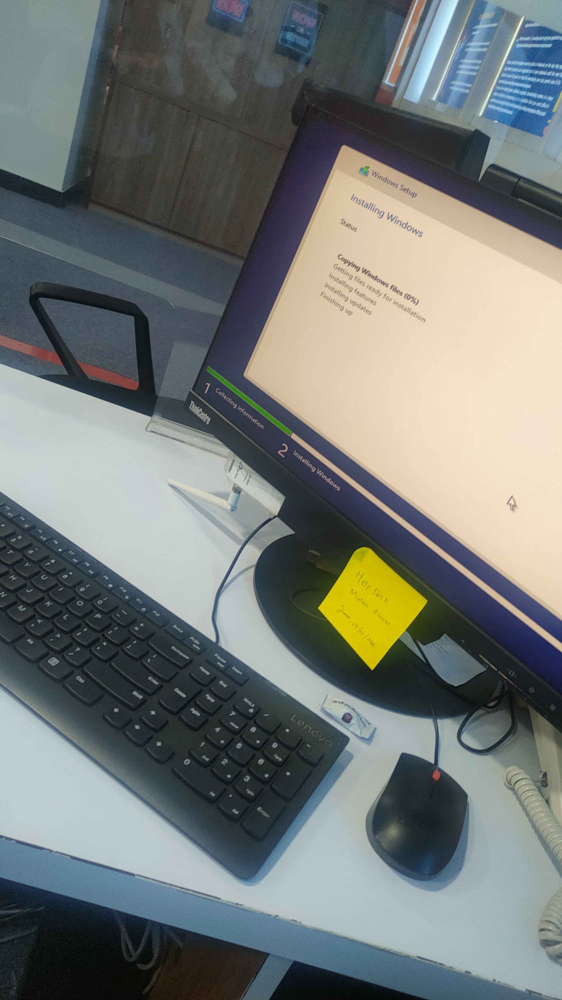
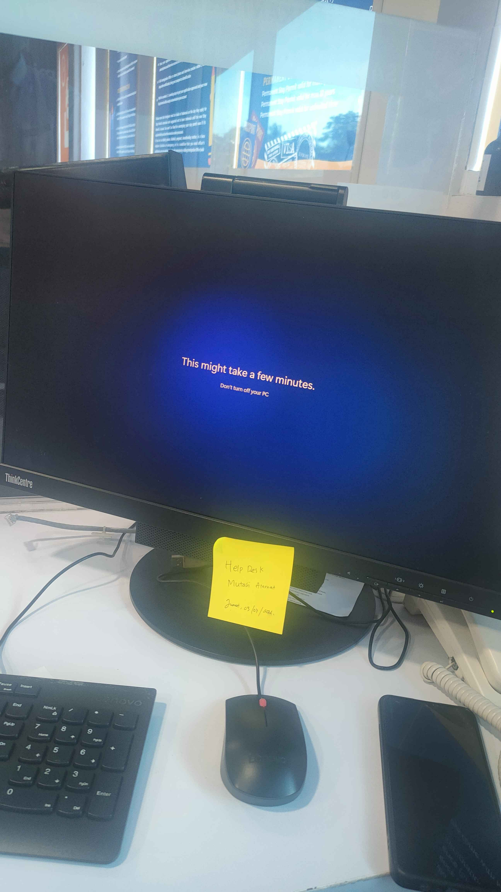
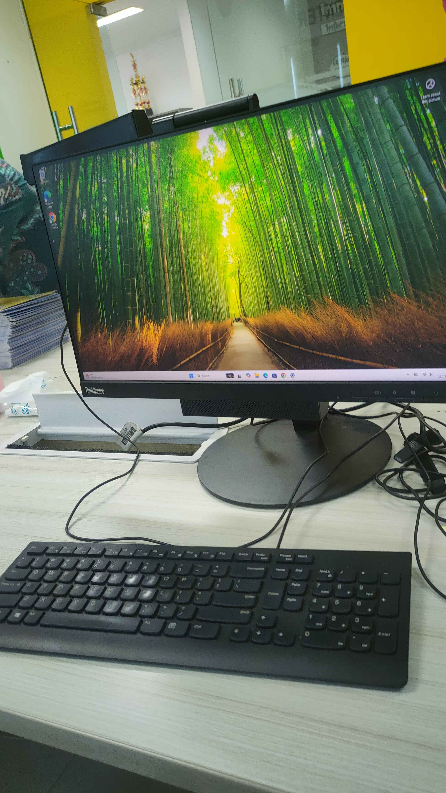

Kumpulan log kerja dan dokumentasi proses instalasi sistem operasi Windows 10/11 pada perangkat komputer kerja maupun komputer laboratorium sekolah.

Foto 1: Proses booting awal ke sistem Installer Windows menggunakan USB Flashdisk Bootable.
Foto 2: Proses saat instalasi telah selesai dan komputer sebentar lagi akan masuk ke tampilan desktop Windows 10 yang siap digunakan.
Foto 3: Tampilan awal home screen Windows 10 setelah proses instalasi selesai dan restart pertama.